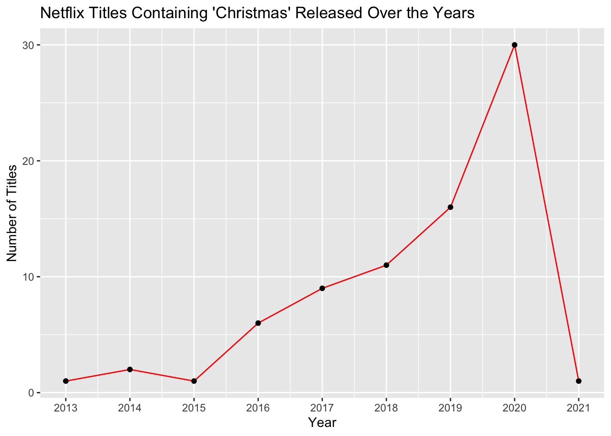
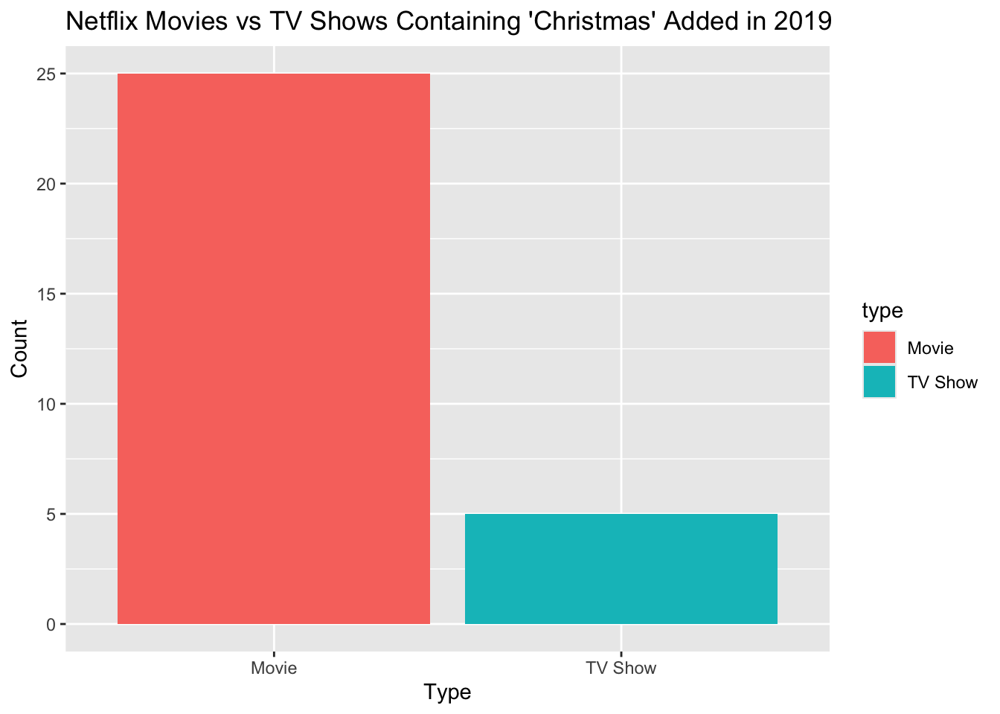
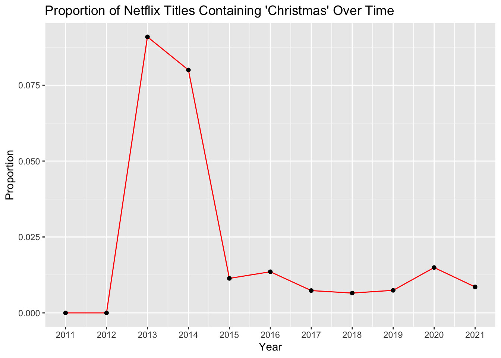

Netflix
This project uses a dataset of Netflix titles published by Shivam Bansal and originally published on Kaggle. The dataset contains information such as the title, type (movie or TV show),and the date each title was added to Netflix. This will be used to explore trends in titles that contain the word “Christmas” over time. The dataset was accessed via the TidyTuesday GitHub repository and covers content available on Netflix up to 2021.
The graph shows a steady increase in the number of Netflix titles containing “Christmas” from 2013 and peaking in 2020. However, then there is a massive drop to nearly zero in 2021, likely due to filming delays caused by COVID-19.

The bar graph shows whether more movies or TV shows with “Christmas” in the title were released in 2020, the year with the most releases with “Christmas” in the title on Netflix. From the graph we can see that 25 of the releases were movies and 5 were TV shows, indicating that Netflix released 5x more movies than tv shows with the word “Christmas” in the title in that year.
However, I also wanted to see the proportion of movies containing “Christmas” over the years. Therefore, I calculated the proportion of all titles containing “Christmas” in the title released over the last years by dividing it by the total number of new titles added to Netflix.

Before 2013, there were no Netflix titles containing the word “Christmas,” as shown in the previous graph. Although the total number of titles containing “Christmas” in 2013 was relatively low, that year had the highest proportion of “Christmas” titles relative to total releases. This shows that Netflix’s overall content volume has increased significantly in past years and Christmas themed titles made up the largest share of new releases in 2013 compared to any other year.
# A tibble: 10 × 2
after_christmas n
<chr> <int>
1 special 4
2 with 4
3 prince 3
4 chronicles 2
5 in 2
6 wedding 2
7 wish 2
8 break 1
9 candle 1
10 catch 1The table presents the top 10 most common words after “Christmas” in Netflix titles. The most common word is “Special” and “with” both appearing 4 times. This is followed by “prince” occurring 3 times. The words “chronicles”, “in”, “wedding” and “wish” each appear two times.
Since “with” and “special” are the most common words that follow “Christmas,” I wanted to see the titles that contain the phrase “Christmas with” to see what words or phrases come after those titles.
# A tibble: 4 × 1
after_with
<chr>
1 a prince
2 a view
3 the kranks
4 my father The four titles containing the phrase “Christmas with” are shown in the table above. The words that follow “Christmas with” in are: “a Prince,” “a View,” “the Kranks,” and “my Father.”
Bansal, S. (2021). Netflix Movies and TV Shows Dataset. Kaggle. Original Source: https://www.kaggle.com/datasets/shivamb/netflix-shows Accessed via TidyTuesday GitHub repository: https://github.com/rfordatascience/tidytuesday/blob/main/data/2021/2021-04-20/readme.md